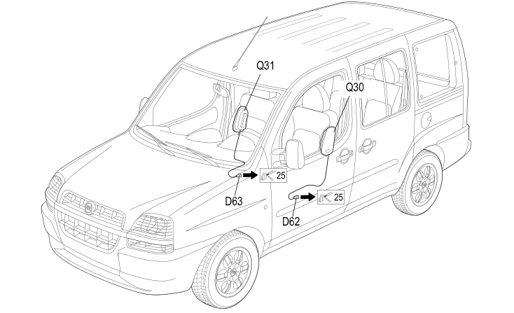

62 SIDE BAG
- Path
- Electrical equipment > 2 WIRING > 62 SIDE BAG
- Kind
- wiring harness
- Applies to
- engines: 1.2 8v, 1.6 16v, 1.9 JTD 8V, 1.9 DIESEL; all production periods
- Interactive page
- https://sloeber94.github.io/elrnDB-fDbl/en/#/2583374
Applies to: engines: 1.2 8v, 1.6 16v, 1.9 JTD 8V, 1.9 DIESEL; all production periods
